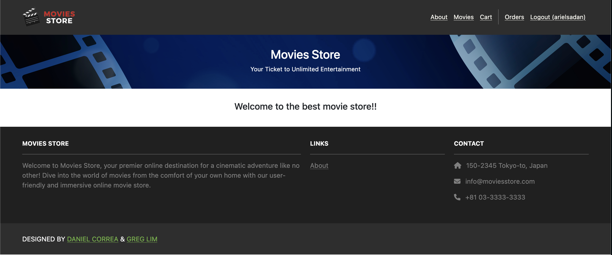

Systems & Architecture
Computer organization, assembly, embedded systems, and the relationship between hardware and software.
Georgia Tech · Computer Science
I’m a Computer Science student interested in systems, cybersecurity, and their interactions. I like understanding how technology works beneath the surface and am currently teaching myself about capture the flags (ctfs) and ethical hacking.
Georgia Institute of Technology
About me
My studies have taken me from object oriented programming to data structures, low-level computer and organizations' policy development. I’m especially drawn to the intersection of systems architecture and security: understanding how a system is built, where it can fail, and how to make it more dependable.
I also enjoy helping others work through technical ideas. Explaining a difficult concept clearly often helps me understand it just as much as it helps others!
Areas of interest
A portfolio that can grow with my coursework, technical interests, and experience.
Computer organization, assembly, embedded systems, and the relationship between hardware and software.
Secure design, threat awareness, and protecting the systems people and organizations depend on.
Building rules and guidelines to streamline and ease cybersecurity, built by people for people.
Featured project
A full-stack Django shopping experience that supports movie discovery, accounts, cart management, checkout, and order history.

Contact